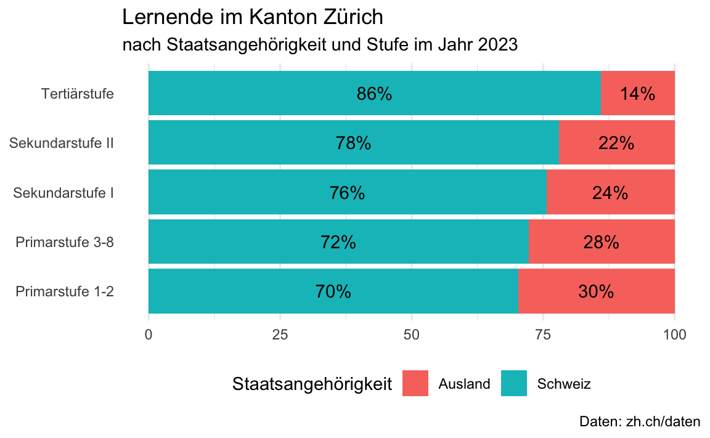

ggplot(data = lernende2022_stufe_staat_sum,
mapping = aes(x = Stufe,
y = Prozent,
fill = Staatsangehoerigkeit)) +
coord_flip() +
geom_col() +
geom_text(aes(label = paste0(round(Prozent, 0), "%")),
position = position_stack(vjust = 0.5)) +
labs(title = "Lernende im Kanton Zürich ",
subtitle = "nach Staatsangehörigkeit und Stufe im Jahr 2022",
fill = "Staatsangehörigkeit",
caption = "Daten: zh.ch/daten",
y = NULL,
x = NULL) +
theme_minimal() +
theme(legend.position = "bottom",
panel.grid.major.y = element_blank())